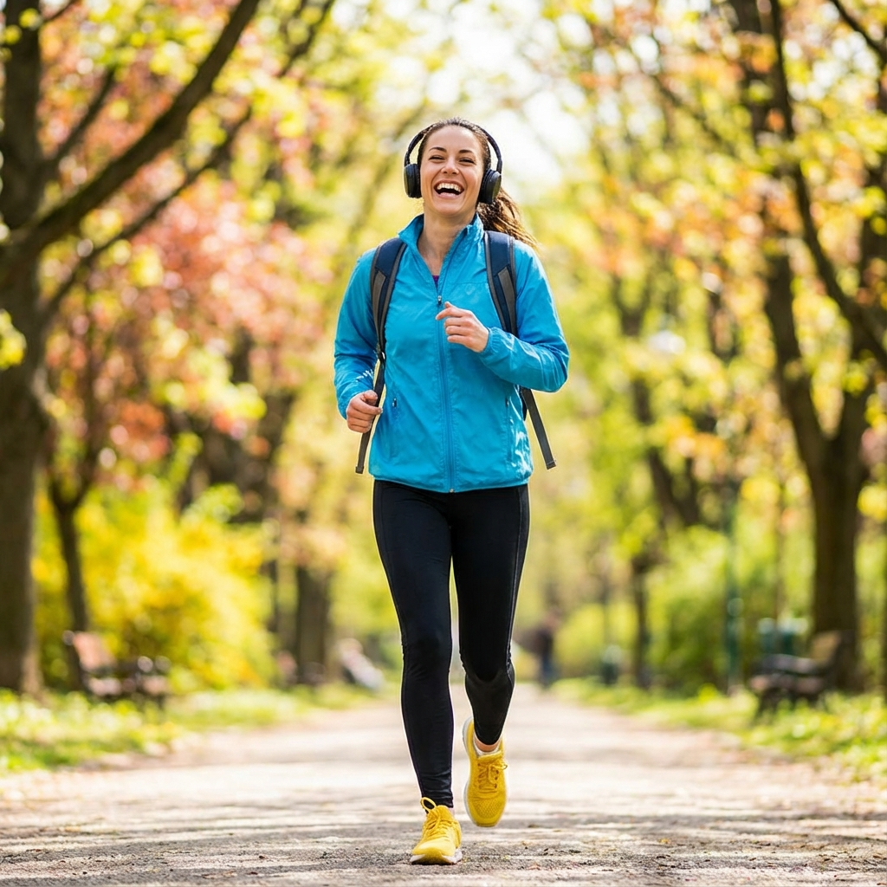

Música ajuda?
Ouvir música durante o treino pode aumentar sua performance em até 15%, distraindo da fadiga, segundo diversos estudos na área de neurociência e fisiologia do exercício. A música atua como um estímulo externo que ajuda a desviar a atenção da sensação de fadiga, reduzindo a percepção de esforço e tornando o exercício mais prazeroso.
Além disso, ritmos musicais adequados podem influenciar diretamente o ritmo dos movimentos, melhorando a cadência, a coordenação e a constância durante o treino. Músicas com batidas mais aceleradas tendem a aumentar a motivação e a intensidade do exercício, enquanto sons mais suaves podem favorecer atividades de menor impacto ou momentos de recuperação.
A música também estimula áreas do cérebro relacionadas à emoção e à recompensa, promovendo a liberação de dopamina e endorfina. Esse efeito melhora o humor, aumenta a disposição e contribui para maior resistência física, especialmente em treinos de longa duração. Dessa forma, incorporar música à rotina de exercícios não apenas ajuda a combater o cansaço, mas também transforma o treino em uma experiência mais envolvente, motivadora e eficiente.
